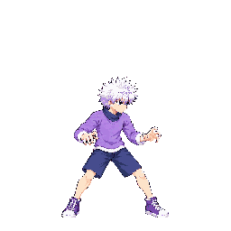

The user authorized one new round of up to three calls after v02 was not approved. Attempt 01 was selected from three preserved calls for its clearer two-sided low sweep and better separation. This page shows the loop and frames extracted from the exact 48-color quantized diagnostic atlas, beside v02, the current stand-in and approved idle f0. A temporary external manifest marked v03 approved solely to allow this diagnostic pack; the branch manifest remains v03 raw and unapproved. No diagnostic output is shipped.
Technical hold: source is 2172×724 instead of the required 2048×256; it retains a smooth illustrated finish rather than hard-pixel source art. The exact packed atlas fails a margin check: active frame 03 reaches x=0 and cuts the rear boot contour; active frame 04 has a folded rear leg with substantially weaker reach. Head and clothing volume look enlarged against idle. Packer proxies H=1.244× and F=1.402× are outside tolerance; F is a shoe proxy, not body scale, and the narrow theoretical uniform-scale overlap is not a verified anatomy pass. Source size and smooth finish also remain technical holds. This is not shipping approval.
Diagnostic atlas SHA-256: 15025afeef5c3945b6a3ce7d5245a71d8e1bd051d3391453cca4bdc9108109e9; anims.json SHA-256: 09d11c86aa52c6698673484a1f443cb5d6df1fb219f26425d275a810e3cf4261. Each candidate frame is a 256×256 cell from that quantized atlas.

Low spinning sweep. Both legs should reach screen-left and screen-right at shin height on each active frame; the fighter faces screen-right throughout.
The other nine Killua v02 strips were approved as drawn via Claude relay combat #20. Those visual approvals are recorded separately; their technical holds remain.